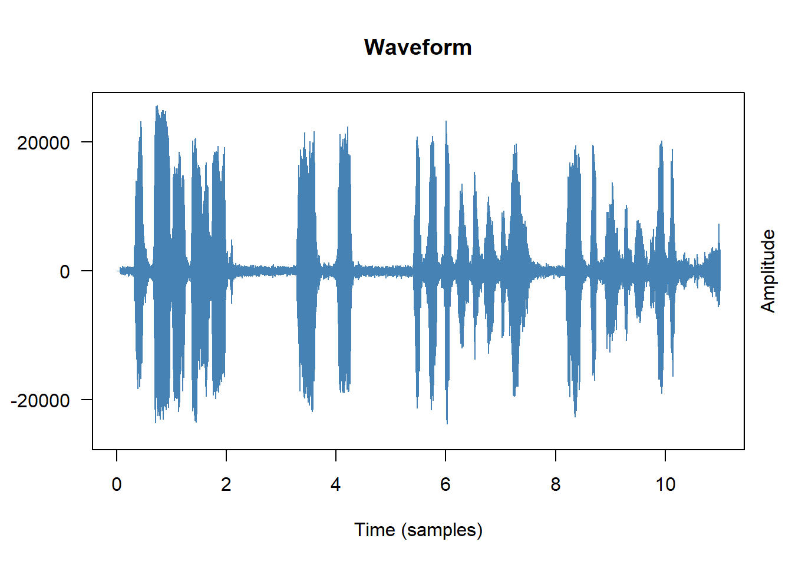

This tutorial introduces speech processing in R — the computational analysis of spoken language. Rather than beginning with text, we begin with raw audio and work our way through the pipeline from acoustic signal to linguistic content: loading and visualising audio, detecting speech segments, performing automatic speech recognition (ASR) with Whisper, and extracting acoustic features such as vowel formants.
Speech processing opens up a wide range of research possibilities that are simply unavailable when working with text alone: studying pronunciation, prosody, voice quality, and speaker variation; building time-aligned transcripts from interview or conversation recordings; and analysing the acoustic correlates of linguistic categories.
The tutorial uses entirely R-native tools — no Python installation is required. Whisper is accessed via the audio.whisper package, an Rcpp wrapper around the whisper.cpp C++ inference library that runs the full Whisper model family directly in R.
Prerequisite Tutorials
Before working through this tutorial, please complete or familiarise yourself with:
The speech processing pipeline — from raw audio to linguistic analysis
Loading and inspecting audio — reading WAV files with tuneR
Visualising audio — waveforms and spectrograms
Voice Activity Detection (VAD) — splitting on pauses with Silero VAD
Automatic Speech Recognition (ASR) — transcribing with Whisper in R
Working with transcripts — time-aligned output, token timestamps
Translation — transcribing non-English audio into English
Speaker diarisation — labelling who speaks when
Post-processing transcripts — cleaning, saving, and analysing output
Extracting acoustic features — vowel formants and vowel space plots
Citation
Martin Schweinberger. 2026. Speech Processing in R: Transcription and Analysis with Whisper. The Language Technology and Data Analysis Laboratory (LADAL), The University of Queensland, Australia. url: https://ladal.edu.au/tutorials/speechprocessing/speechprocessing.html (Version 3.1.1). doi: 10.5281/zenodo.19332965.
Preparation and Session Set-up
Installing R Packages
Code
# Core audio handling install.packages("tuneR") install.packages("seewave") # Whisper ASR (R-native, no Python needed) # audio.whisper is not yet on CRAN — install from GitHub install.packages("remotes") remotes::install_github("bnosac/audio.whisper") # Data wrangling and visualisation install.packages("dplyr") install.packages("ggplot2") install.packages("flextable") install.packages("here") install.packages("checkdown")
Two R Whisper Packages
Two packages bring Whisper to R natively:
audio.whisper (GitHub: bnosac/audio.whisper) — an Rcpp wrapper around whisper.cpp, a highly optimised C++ inference engine. Fast, memory-efficient, and requires no external dependencies. This is what we use throughout this tutorial.
whisper (CRAN) — a pure R torch implementation of Whisper. Newer and still maturing; useful if you want a fully CRAN-installable solution.
Both packages run without Python. There is no need to install reticulate or any Python packages.
System Requirements
audio.whisper compiles whisper.cpp during installation. You need:
R ≥ 4.1
A C++ compiler: already present on Mac (Xcode Command Line Tools) and Linux; Windows users need Rtools
From version 0.5.0, cmake is also required: install via brew install cmake (Mac), sudo apt install cmake (Linux), or from cmake.org (Windows)
GPU acceleration is optional but supported: CUDA on Linux, Metal on Apple Silicon
Loading Packages
Code
library(tuneR) # audio I/O library(seewave) # signal processing and spectrograms library(audio.whisper) # Whisper ASR library(dplyr) # data manipulation library(ggplot2) # plotting library(flextable) # formatted tables library(here) # portable file paths library(checkdown) # interactive exercises options(stringsAsFactors =FALSE) options(scipen =100)
Sample Audio File
All code in this tutorial assumes you have a 16-bit mono WAV file at data/sample.wav inside your R Project. The audio.whisper package also includes a built-in sample (a famous JFK speech excerpt) which you can use to run the Whisper sections immediately without your own audio:
Code
# Use your own file: audio_path <- here::here("data", "sample.wav") # Or use the built-in JFK sample from audio.whisper: audio_path <-system.file(package ="audio.whisper", "samples", "jfk.wav")
Audio Format Requirements
Whisper requires 16-bit mono WAV files sampled at 16 kHz. If your file is in a different format (MP3, FLAC, stereo, different sample rate), convert it first. The ffmpeg command-line tool handles this easily:
# Convert any audio file to 16-bit mono 16 kHz WAV ffmpeg-i input.mp3 -ar 16000 -ac 1 -c:a pcm_s16le output.wav
You can call ffmpeg from R using system() if it is installed:
What you’ll learn: The conceptual pipeline from raw audio to linguistic analysis
Why it matters: Understanding the pipeline helps you choose the right tool for each step and anticipate where errors can occur
Speech processing typically follows a sequential pipeline:
Raw Audio (.wav)
↓
[1] Load and Inspect
↓
[2] Visualise (Waveform, Spectrogram)
↓
[3] Voice Activity Detection (VAD)
Find speech segments, detect pauses
↓
[4] Automatic Speech Recognition (ASR)
Convert audio to text with timestamps
↓
[5] Speaker Diarisation (optional)
Label who speaks when
↓
[6] Post-processing
Clean, save, analyse transcript
↓
[7] Acoustic Feature Extraction (optional)
Formants, pitch, intensity
↓
Statistical Analysis
Each step produces structured data that feeds into the next. Whisper (step 4) is the centrepiece: it converts raw audio into a time-aligned transcript. VAD (step 3) is a pre-processing step that removes silence and noise before transcription, improving both accuracy and speed.
The table below maps each step to the R tools used in this tutorial:
Step
Tool
Package
Load audio
tuneR::readWave()
tuneR
Visualise
tuneR::plot() / seewave::spectro()
tuneR / seewave
VAD / Segmentation
audio.whisper::vad()
audio.whisper
ASR (transcription)
audio.whisper::whisper() + predict()
audio.whisper
Speaker diarisation
predict(..., diarize = TRUE)
audio.whisper
Post-processing
dplyr, stringr, write.csv()
dplyr / base R
Acoustic features
seewave::formant() + ggplot2
seewave / ggplot2
Loading and Inspecting Audio
Section Overview
What you’ll learn: How to load a WAV file into R and inspect its basic properties
The tuneR package provides the standard interface for reading and manipulating audio in R. readWave() loads a WAV file and returns a Wave object:
Code
audio_path <- here::here("data", "sample.wav") wav <- tuneR::readWave(audio_path) # Or with the built-in sample: wav <- tuneR::readWave( system.file(package ="audio.whisper", "samples", "jfk.wav") )
Inspect the basic properties of the audio:
Code
# Print a summary of the Wave object wav
Wave Object
Number of Samples: 176000
Duration (seconds): 11
Samplingrate (Hertz): 16000
Channels (Mono/Stereo): Mono
PCM (integer format): TRUE
Bit (8/16/24/32/64): 16
Code
# Key properties accessed via slots sampling_rate <- wav@samp.rate # samples per second (e.g., 16000) bit_depth <- wav@bit # bit depth (16 = standard) n_samples <-length(wav@left) # number of samples (mono: @left only) n_channels <-ifelse(wav@stereo, 2, 1) # Calculate duration in seconds duration_sec <- n_samples / sampling_rate cat("Duration: ", round(duration_sec, 2), "seconds\n")
Duration: 11 seconds
Code
cat("Sampling rate:", sampling_rate, "Hz\n")
Sampling rate: 16000 Hz
Code
cat("Bit depth: ", bit_depth, "bit\n")
Bit depth: 16 bit
Code
cat("Channels: ", n_channels, "\n")
Channels: 1
Understanding Sampling Rate
The sampling rate (in Hz) is the number of audio samples recorded per second. CD quality is 44,100 Hz; telephone quality is 8,000 Hz. Whisper requires 16,000 Hz (16 kHz) — the standard for speech processing. A lower sampling rate means less high-frequency information is preserved, which is fine for speech (which contains most energy below 8 kHz) but would degrade music quality. If wav@samp.rate is not 16000, re-sample the file with ffmpeg before transcription.
Visualising Audio
Section Overview
What you’ll learn: How to create waveform and spectrogram plots to visually inspect audio
Key functions:plot() on a Wave object, seewave::spectro()
Why it matters: Visual inspection catches obvious problems (silence, clipping, background noise) before you run time-consuming ASR
Waveform
A waveform plots amplitude (air pressure displacement) against time. It shows when the recording is loud or quiet, where there are pauses, and whether the signal is clipped (amplitude maxed out):
Code
# Base R plot method for Wave objects plot(wav, main ="Waveform", col ="steelblue", xlab ="Time (samples)", ylab ="Amplitude")

From the waveform you can immediately see:
Pauses and silences — flat regions with near-zero amplitude
Clipping — amplitude that hits the maximum value consistently
Background noise — a non-zero baseline even during silence
Approximate speech rhythm — alternating loud (vowel nuclei) and quiet (consonants) regions
Spectrogram
A spectrogram plots frequency (y-axis) against time (x-axis), with colour representing intensity. It reveals the frequency structure of speech — formants, fricatives, stop bursts — that the waveform cannot show:
Code
# Narrow-band spectrogram (good for pitch/formants) seewave::spectro(wav, flim =c(0, 8), # frequency limit in kHz main ="Spectrogram", collevels =seq(-40, 0, 1)) # dynamic range in dB # Wide-band spectrogram (good for temporal structure) seewave::spectro(wav, wl =256, # shorter window = better time resolution flim =c(0, 8), main ="Wide-band Spectrogram")
Reading a Spectrogram
In a spectrogram of speech:
Dark horizontal bands (especially in the lower 3 kHz) are formants — resonant frequencies of the vocal tract that define vowel quality
Broadband vertical striations are voicing pulses from the vocal folds
Diffuse high-frequency energy indicates fricatives (s, f, sh)
Silence / gaps appear as blank regions
The fundamental frequency (F0) is the lowest horizontal band and its harmonics are visible as evenly spaced bands above it
Exercises: Audio Basics
Q1. What does a sampling rate of 16,000 Hz mean?
Q2. What does a spectrogram show that a waveform does not?
Voice Activity Detection (VAD)
Section Overview
What you’ll learn: How to use the built-in Silero VAD in audio.whisper to identify speech segments and split audio on pauses — the correct way to segment long recordings
Key function:audio.whisper::vad()
Why it matters: Splitting on fixed time intervals (e.g., every 5 seconds) is almost always wrong — it cuts through words mid-utterance. VAD splits at natural pause boundaries where there is genuinely no speech.
What Is VAD?
Voice Activity Detection classifies each moment in the audio as either speech or non-speech (silence, background noise, music). In a transcription pipeline, VAD serves two purposes:
Pre-segmentation: Split a long recording into shorter chunks at natural pause boundaries before sending to Whisper, so that each segment is self-contained
Noise filtering: Prevent Whisper from wasting computation (and producing hallucinated output) on silent or non-speech portions
audio.whisper integrates the Silero VAD model — a lightweight, accurate voice activity detector — directly into the package. No additional installation is needed.
Running VAD
Code
# Detect speech segments in the audio file vad_result <- audio.whisper::vad( path = audio_path, threshold =0.5, # confidence threshold: 0–1 (higher = stricter) min_speech_duration =250, # minimum speech segment in ms min_silence_duration =100, # minimum silence to split on, in ms max_speech_duration =-1, # no maximum (set to e.g. 30000 for 30s chunks) pad =30, # pad each segment by this many ms overlap =0.1# seconds of overlap between segments ) # Inspect the result head(vad_result$data)
The $data element is a data frame with columns segment, from, to, and has_voice:
segment
from
to
has_voice
1
0.00
1.19
false
2
1.24
3.76
true
3
3.81
5.05
false
4
5.10
7.28
true
5
7.34
8.97
false
6
9.02
11.00
true
Extracting Speech Segments for Transcription
Code
# Keep only the speech segments speech_segments <- vad_result$data |> dplyr::filter(has_voice ==TRUE) # These timestamps can be passed directly to Whisper's sections argument # Convert from seconds to milliseconds for the sections argument sections <-data.frame( start =as.integer(speech_segments$from *1000), duration =as.integer((speech_segments$to - speech_segments$from) *1000) ) cat("Found", nrow(sections), "speech segments\n")
The draft of this tutorial suggested splitting audio into fixed 5-second chunks. This is almost always the wrong approach. Fixed chunking:
Cuts through words and sentences mid-utterance
Forces Whisper to transcribe fragments with no linguistic context
Produces transcripts that are hard to reassemble
VAD-based splitting respects linguistic structure: it splits at silence boundaries where speakers have paused. Each segment is a complete utterance or breath group, giving Whisper maximum context and producing much cleaner output.
The only situation where fixed-length chunking is appropriate is when the audio has no natural pauses (e.g., continuous singing, non-stop machine noise) — not typical for speech data.
Automatic Speech Recognition with Whisper
Section Overview
What you’ll learn: How to download Whisper models, transcribe audio files, and work with the time-aligned output
Key functions:audio.whisper::whisper(), predict()
Why R, not Python:audio.whisper is an Rcpp wrapper around whisper.cpp — a highly optimised C++ implementation of Whisper. It runs entirely within R with no Python dependency.
What Is Whisper?
Whisper is OpenAI’s open-source automatic speech recognition model, released in 2022 and updated regularly since. Key properties:
Trained on over 680,000 hours of multilingual audio from the web
Supports transcription in ~100 languages and translation to English
Available in five sizes — from tiny (39M parameters) to large-v3 (1.5B parameters)
Robust to accents, background noise, and technical vocabulary
Produces word-level timestamps when requested
Released under the MIT licence — free for academic and commercial use
Whisper’s architecture is a transformer-based encoder-decoder. Audio is converted into a log-Mel spectrogram, processed by the encoder, and decoded into text tokens by the decoder. The training procedure exposes the model to extremely diverse speech conditions, giving it strong zero-shot generalisation.
Whisper Model Sizes
Model
Parameters
Download_size
RAM_required
Notes
tiny
39M
75 MB
~390 MB
Fastest, lowest accuracy
tiny.en
39M
75 MB
~390 MB
English only
base
74M
142 MB
~500 MB
Good balance for testing
base.en
74M
142 MB
~500 MB
English only
small
244M
466 MB
~1.0 GB
Recommended starting point
small.en
244M
466 MB
~1.0 GB
English only
medium
769M
~1.4 GB
~2.6 GB
Good multilingual accuracy
medium.en
769M
~1.4 GB
~2.6 GB
English only
large-v2
1.5B
~2.9 GB
~5.0 GB
High accuracy
large-v3
1.5B
~2.9 GB
~5.0 GB
Best accuracy
large-v3-turbo
809M
~1.5 GB
~3.1 GB
Fast + high accuracy (recommended)
Downloading a Model
Models are downloaded from HuggingFace and cached locally. You only need to download each model once:
Code
# Download a model — specify the model name # The model file is stored in R's user data directory whisper_download_model("base") # 142 MB — good for testing whisper_download_model("small") # 466 MB — recommended for research whisper_download_model("large-v3-turbo") # best accuracy/speed trade-off
Basic Transcription
Code
# Load the model model <- audio.whisper::whisper("base") # Transcribe the audio file trans <-predict(model, newdata = audio_path, language ="en", # specify language or "auto" for detection n_threads =4) # use multiple CPU threads for speed # Inspect the result trans
The output of predict() is a list with three elements:
Element
Type
Contains
$data
data.frame
Segment-level transcript: columns segment, segment_offset, text, from, to
Start, end, and duration of the transcription process
Code
# The main transcript: one row per segment head(trans$data) # Number of segments transcribed nrow(trans$data) # Plain text: concatenate all segments full_text <-paste(trans$data$text, collapse =" ") cat(full_text)
Time-Aligned Segments
The $data data frame includes from and to columns in HH:MM:SS.mmm format — the start and end time of each segment in the audio:
Code
# View the time-aligned transcript trans$data |> dplyr::select(segment, from, to, text) |>head(10)
A simulated example of what this looks like:
segment
from
to
text
1
00:00:00.000
00:00:02.280
And so my fellow Americans,
2
00:00:02.340
00:00:05.710
ask not what your country can do for you,
3
00:00:05.780
00:00:09.060
ask what you can do for your country.
4
00:00:09.120
00:00:12.490
My fellow citizens of the world,
5
00:00:12.560
00:00:15.200
ask not what America will do for you,
Token-Level Timestamps
Setting token_timestamps = TRUE provides token-level alignment — each subword token gets its own time range and probability score:
Token timestamps are useful for forced alignment — connecting specific words to precise time positions in the audio. They are less accurate than dedicated forced aligner tools (such as the Montreal Forced Aligner), but require no additional setup and are good enough for many research purposes.
Transcribing VAD-Segmented Audio
For longer recordings, the recommended workflow is to run VAD first and pass the speech segments to predict() via the sections argument:
Code
# Run VAD vad_result <- audio.whisper::vad(audio_path) # Extract speech segments, convert to ms sections <- vad_result$data |> dplyr::filter(has_voice ==TRUE) |> dplyr::transmute( start =as.integer(from *1000), duration =as.integer((to - from) *1000) ) # Transcribe only the speech segments model <- audio.whisper::whisper("small") trans <-predict(model, newdata = audio_path, language ="en", sections = sections, n_threads =4) nrow(trans$data) head(trans$data[, c("segment", "from", "to", "text")])
Using VAD Built into predict()
Alternatively, predict() accepts a vad = TRUE argument that runs Silero VAD internally before transcription — a convenient one-step approach:
Code
model <- audio.whisper::whisper("small") trans <-predict(model, newdata = audio_path, language ="en", vad =TRUE, # run VAD automatically n_threads =4) head(trans$data[, c("from", "to", "text")])
Exercises: ASR with Whisper
Q1. Why should you use vad = TRUE or pre-segment with vad() for long recordings rather than passing the whole file directly to predict()?
Q2. What is the difference between trans$data and trans$tokens?
Q3. Which Whisper model is recommended as the best balance between speed and accuracy for most research use cases?
Translation
Section Overview
What you’ll learn: How to use Whisper’s built-in translation capability to transcribe non-English audio directly into English
Key argument:type = "translate" in predict()
One of Whisper’s most useful capabilities for linguistic research is speech-to-text translation: transcribing audio in one language directly into English text — without a separate translation step. This is particularly valuable for multilingual corpora where you want English translations of non-English speech.
Code
# Transcribe in the original language (e.g., Dutch) trans_nl <-predict(model, newdata = audio_path_dutch, language ="nl", type ="transcribe") # default # Translate to English trans_en <-predict(model, newdata = audio_path_dutch, language ="nl", type ="translate") # produces English output # Compare cat("Dutch: ", paste(trans_nl$data$text, collapse =" "), "\n") cat("English: ", paste(trans_en$data$text, collapse =" "), "\n")
Supported Languages
To see all languages Whisper supports:
audio.whisper::whisper_languages()
Whisper supports ~100 languages. Performance varies considerably: accuracy is highest for high-resource languages (English, Spanish, French, German, Chinese, Japanese) and lower for low-resource languages. Always evaluate accuracy on a sample of your own data before relying on Whisper for a full corpus.
Speaker Diarisation
Section Overview
What you’ll learn: How to identify which speaker uttered each segment of a multi-speaker recording
Key argument:diarize = TRUE in predict()
Why it matters: Without diarisation, a transcript of a conversation or interview shows only sequential text with no indication of speaker turns. Diarisation adds the “who spoke when” dimension that is essential for conversation analysis, sociolinguistics, and interview research.
What Is Speaker Diarisation?
Speaker diarisation is the process of partitioning an audio stream into segments and labelling each segment with the identity (or an anonymous label) of the speaker. It answers the question: “Who spoke when?”
Diarisation does not identify who a person is by name — it assigns arbitrary labels (SPEAKER_00, SPEAKER_01, etc.) that are consistent within a recording. Two utterances from the same physical speaker receive the same label; utterances from different speakers receive different labels.
audio.whisper supports diarisation directly within predict() via the diarize = TRUE argument:
Code
model <- audio.whisper::whisper("small") trans_diarised <-predict(model, newdata = audio_path, language ="en", diarize =TRUE, # enable speaker diarisation vad =TRUE, # also enable VAD n_threads =4) # The $data column now includes a 'speaker' column head(trans_diarised$data[, c("segment", "from", "to", "speaker", "text")])
segment
from
to
speaker
text
1
00:00:00.000
00:00:03.350
SPEAKER_00
Good morning, can you tell me about your research?
2
00:00:03.400
00:00:07.060
SPEAKER_01
Yes, I work on language acquisition in bilingual children.
3
00:00:07.120
00:00:10.820
SPEAKER_00
Fascinating. What age group do you focus on?
4
00:00:10.880
00:00:14.180
SPEAKER_01
Primarily three to six year olds, the critical period.
5
00:00:14.230
00:00:18.690
SPEAKER_00
And what methods do you typically use?
6
00:00:18.750
00:00:22.400
SPEAKER_01
Mainly naturalistic observation and structured elicitation tasks.
Working with Diarised Transcripts
Code
# How many turns per speaker? trans_diarised$data |> dplyr::count(speaker, sort =TRUE) # How much time does each speaker occupy? trans_diarised$data |> dplyr::mutate( from_sec =as.numeric(substr(from, 7, 12)), to_sec =as.numeric(substr(to, 7, 12)), duration = to_sec - from_sec ) |> dplyr::group_by(speaker) |> dplyr::summarise( n_turns = dplyr::n(), total_sec =round(sum(duration), 1), mean_turn =round(mean(duration), 2), .groups ="drop" ) # Extract one speaker's contribution only speaker_00_text <- trans_diarised$data |> dplyr::filter(speaker =="SPEAKER_00") |> dplyr::pull(text) |>paste(collapse =" ")
Limitations of Built-in Diarisation
audio.whisper’s built-in diarisation is convenient but limited compared to dedicated tools:
It uses speaker embeddings derived from the Whisper encoder, not a purpose-built diarisation model
Accuracy degrades with more than 3–4 speakers or significant speaker overlap
It cannot handle cross-talk (simultaneous speech)
For more accurate diarisation, especially for long recordings with many speakers or overlapping speech, consider post-processing with pyannote.audio (Python) or matching Whisper’s segment timestamps against a separate diarisation tool.
Post-Processing Transcripts
Section Overview
What you’ll learn: How to clean, structure, save, and begin analysing transcripts produced by Whisper
Key operations: Text cleaning, timestamp parsing, saving to CSV/text formats
Whisper output typically requires some post-processing before analysis. Common steps include removing leading/trailing whitespace, standardising punctuation, parsing timestamps, and saving in corpus-friendly formats.
Cleaning the Transcript
Code
library(stringr) transcript_clean <- trans$data |> dplyr::mutate( # Remove leading/trailing whitespace (Whisper adds a leading space to each segment) text = stringr::str_trim(text), # Normalise multiple spaces text = stringr::str_replace_all(text, "\\s+", " "), # Remove segments that are likely hallucinations (very short or only punctuation) is_valid = stringr::str_detect(text, "[[:alpha:]]{3,}") ) |> dplyr::filter(is_valid) |> dplyr::select(-is_valid)
Parsing Timestamps
Whisper returns timestamps as HH:MM:SS.mmm strings. Convert them to numeric seconds for calculations:
Code
parse_hms <-function(hms_string) { # Convert "HH:MM:SS.mmm" to numeric seconds parts <- stringr::str_split(hms_string, "[:.]")[[1]] h <-as.numeric(parts[1]) m <-as.numeric(parts[2]) s <-as.numeric(parts[3]) ms <-as.numeric(parts[4]) /1000 h *3600+ m *60+ s + ms } transcript_timed <- transcript_clean |> dplyr::mutate( from_sec =sapply(from, parse_hms), to_sec =sapply(to, parse_hms), duration = to_sec - from_sec ) # Summary statistics cat("Total segments: ", nrow(transcript_timed), "\n") cat("Total duration: ", round(sum(transcript_timed$duration), 1), "seconds\n") cat("Mean seg. length:", round(mean(transcript_timed$duration), 2), "seconds\n")
Saving Transcripts
Code
# Save as CSV (best for further analysis in R) write.csv(transcript_timed, file = here::here("outputs", "transcript.csv"), row.names =FALSE) # Save as plain text (one segment per line with timestamps) transcript_txt <- transcript_timed |> dplyr::mutate( line =paste0("[", from, " --> ", to, "] ", text) ) |> dplyr::pull(line) writeLines(transcript_txt, here::here("outputs", "transcript.txt")) # Save in SubRip (SRT) subtitle format — useful for video annotation srt_lines <-character(nrow(transcript_timed) *4) for (i inseq_len(nrow(transcript_timed))) { idx <- (i -1) *4 srt_lines[idx +1] <-as.character(i) srt_lines[idx +2] <-paste( gsub("\\.", ",", transcript_timed$from[i]), "-->", gsub("\\.", ",", transcript_timed$to[i]) ) srt_lines[idx +3] <- transcript_timed$text[i] srt_lines[idx +4] <-""} writeLines(srt_lines, here::here("outputs", "transcript.srt"))
Extracting Acoustic Features
Section Overview
What you’ll learn: How to extract vowel formants (F1, F2) from audio and visualise the vowel space
Key functions:seewave::formant(), ggplot2
Why it matters: Formants are the primary acoustic correlates of vowel quality — the basis of sociophonetic research, vowel change studies, and second-language acquisition research
What Are Formants?
Formants are resonant frequencies of the vocal tract. Each vowel is characterised by a distinctive pattern of formant frequencies:
F1 (first formant) correlates primarily with tongue height — low vowels have high F1, high vowels have low F1
F2 (second formant) correlates primarily with tongue backness — front vowels have high F2, back vowels have low F2
F3 (third formant) is associated with lip rounding and retroflexion
Plotting F1 against F2 (with axes reversed to match the traditional vowel trapezoid) shows the vowel space of a speaker or variety.
Extracting Formants
Code
# Extract formants using seewave # wl: window length (samples); higher = better frequency resolution formants_raw <- seewave::formant(wav, fmax =5500, # maximum frequency in Hz wl =512, plot =FALSE) # Convert to data frame formant_df <-as.data.frame(formants_raw) names(formant_df)[1:3] <-c("time", "F1", "F2") head(formant_df)
Formant Extraction Quality
Automatic formant extraction is sensitive to:
Voiced vs. unvoiced segments: formants are only meaningful during voiced speech. Always filter to voiced segments (where pitch is detected) before analysis.
Speaker sex/age: typical F1/F2 ranges differ by speaker characteristics. Filter out implausible values (e.g., F1 > 1000 Hz or F2 < 500 Hz often indicate extraction errors).
Window size: a longer analysis window gives better frequency resolution but worse time resolution. The default wl = 512 is a reasonable starting point.
For high-quality formant extraction in sociophonetics, dedicated tools like Praat (with an R interface via the rPraat or PraatR packages) are generally preferred.
Filtering and Plotting the Vowel Space
Code
# Filter to plausible formant values (crude voiced speech filter) formant_filtered <- formant_df |> dplyr::filter( F1 >200, F1 <1000, # typical F1 range for adult speakers F2 >500, F2 <3500# typical F2 range for adult speakers ) |> dplyr::filter(!is.na(F1), !is.na(F2)) # Vowel space plot following phonetic convention (axes reversed) ggplot(formant_filtered, aes(x = F2, y = F1)) +geom_point(alpha =0.3, size =1.2, colour ="steelblue") +geom_density_2d(colour ="tomato", linewidth =0.5) +scale_x_reverse(name ="F2 (Hz)") +scale_y_reverse(name ="F1 (Hz)") +labs( title ="Vowel Space (F1 – F2 Plot)", subtitle ="Each point = one analysis frame; contours show density" ) +theme_bw() +theme(panel.grid.minor =element_blank())
Connecting Acoustics to the Transcript
The most powerful analyses combine the time-aligned transcript with the acoustic measurements — extracting formants only during specific words or vowels:
Code
# Suppose we want formants during a specific word in the transcript target_segment <- transcript_timed |> dplyr::filter(stringr::str_detect(text, regex("\\bask\\b", ignore_case =TRUE))) |> dplyr::slice(1) # Extract formants for the time window of that word # (sampling_rate was defined when loading the audio) start_sample <-round(target_segment$from_sec * wav@samp.rate) end_sample <-round(target_segment$to_sec * wav@samp.rate) wav_segment <- tuneR::extractWave(wav, from = start_sample, to = end_sample, xunit ="samples") formants_word <- seewave::formant(wav_segment, fmax =5500, plot =FALSE)
This kind of targeted extraction — formants during specific words, identified via their Whisper-generated timestamps — is the core workflow for corpus phonetics and sociophonetics research.
Exercises: Acoustics and Post-Processing
Q1. Why are the axes reversed in an F1–F2 vowel space plot?
Q2. What is the purpose of filtering formant values to F1 > 200 & F1 < 1000 before plotting?
Summary
This tutorial has covered the complete speech processing pipeline in R, from raw audio to linguistic analysis:
Audio handling (tuneR): loading WAV files, inspecting sampling rate and duration, generating waveforms and spectrograms.
Voice Activity Detection (audio.whisper::vad()): splitting recordings on natural pause boundaries using the Silero VAD model — the correct alternative to fixed-length chunking.
Automatic Speech Recognition (audio.whisper): downloading Whisper models, transcribing audio in any of ~100 languages, obtaining time-aligned segment and token output, using VAD pre-filtering to reduce hallucination.
Translation (type = "translate"): converting non-English speech directly to English text.
Speaker diarisation (diarize = TRUE): labelling which speaker produced each segment, enabling conversation and interview analysis.
Post-processing: cleaning Whisper output, parsing timestamps to seconds, saving in CSV, TXT, and SRT formats.
Acoustic feature extraction (seewave::formant()): extracting vowel formants and visualising the vowel space, including targeted extraction for specific words using transcript timestamps.
The unifying theme is the pipeline: each step produces structured data — timestamps, text, speaker labels, formant measurements — that can be combined with dplyr for linguistically meaningful analyses.
Citation & Session Info
Citation
Martin Schweinberger. 2026. Speech Processing in R: Transcription and Analysis with Whisper. The Language Technology and Data Analysis Laboratory (LADAL), The University of Queensland, Australia. url: https://ladal.edu.au/tutorials/speechprocessing/speechprocessing.html (Version 3.1.1). doi: 10.5281/zenodo.19332965.
@manual{martinschweinberger2026speech,
author = {Martin Schweinberger},
title = {Speech Processing in R: Transcription and Analysis with Whisper},
year = {2026},
note = {https://ladal.edu.au/tutorials/speechprocessing/speechprocessing.html},
organization = {The Language Technology and Data Analysis Laboratory (LADAL), The University of Queensland, Australia},
edition = {2026.03.28}
doi = {}
}
This tutorial was re-developed with the assistance of Claude (claude.ai), a large language model created by Anthropic. Claude was used to help revise the tutorial text, structure the instructional content, generate the R code examples, and write the checkdown quiz questions and feedback strings. All content was reviewed, edited, and approved by the author (Martin Schweinberger), who takes full responsibility for the accuracy and pedagogical appropriateness of the material. The use of AI assistance is disclosed here in the interest of transparency and in accordance with emerging best practices for AI-assisted academic content creation.